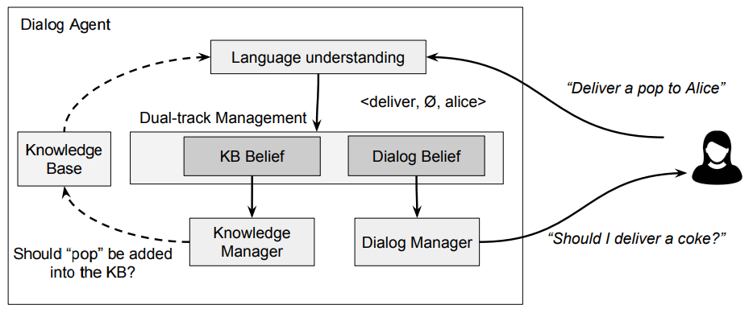

Stuff that I worked on:
Learning cloth sliding using tactile sensing.
In previous works, tactile sensing has been mainly used in manipulation to get some information about the material of the object that is being manipulated, in order to, for example, prevent slip and improve the quality of the grasp. Humans can leverage tactile information for other dexterous manipulation tasks like manipulating an object without relying on vision using sliding. Comparing to different modalities of perception, tactile sensing has some advantages over vision. It provides location and geometry information of the cloth portion being grasped, which would be otherwise occluded when relying on vision only. Tactile sensors can provide undistubed information about the status of the current grasp. Possible applications of learning skills such as sliding are: cloth folding, rope manipulation, etc.
We are using a sawyer equipped with a WSG 32 gripper w/ WSG DSA tactile sensor fingers. The task that we are trying to do is this: One point of the cloth is fixed, the gripper grasps the cloth edge near this point and slides to get to the end of the cloth. The policy is trained on real robot using TD3.
Augmenting Knowledge through Statistical, Goal-oriented Human-Robot Dialog
IEEE/RSJ International Conference on Intelligent Robots and Systems (IROS 2019) Saeid Amiri, Sujay Bajracharya, Cihangir Goktolga, Jesse Thomason, Shiqi Zhang https://arxiv.org/abs/1907.03390 Some robots can interact with humans using natural language, and identify service requests through human-robot dialog. However, few robots are able to improve their language capabilities from this experience. In this paper, we develop a dialog agent for robots that is able to interpret user commands using a semantic parser, while asking clarification questions using a probabilistic dialog manager. This dialog agent is able to augment its knowledge base and improve its language capabilities by learning from dialog experiences, e.g., adding new entities and learning new ways of referring to existing entities. We have extensively evaluated our dialog system in simulation as well as with human participants through MTurk and real-robot platforms. We demonstrate that our dialog agent performs better in efficiency and accuracy in comparison to baseline learning agents.
Simultaneous Intention Estimation and Knowledge Augmentation via Human-Robot Dialog
RSS 2018 Workshop on Models and Representations for Natural Human-Robot Communication Sujay Bajracharya, Saeid Amiri, Jesse Thomason, Shiqi Zhang https://arxiv.org/abs/1907.03390Autonomous Meal Assistance Robot
REU: University of Wisconsin-StoutRobotic arms used for meal assistance can help improve autonomy and quality of life for people with disabilites. However, controlling such a system is often difficult for individuals with upper-body disabilities. We created a meal assistance robot capable of navigating to and from a user’s mouth and a bowl of food through the use of landmarks and facial tracking. The system can be controlled with both facial gestures and speech commands, allowing it to be used by individuals with a wide range of disabilities. We also tested our system with nine able-bodied participants, with each participant running three trials of eating soup and dry food for both the manual and autonomous system. Our hypothesis was that our autonomous system would be faster, easier to use and generally preferred over manual mode. The data showed that our system was in fact preferred and easier to use; however, only for difficult tasks was it proven to be faster than manual control.
We utilized a Kinova JACO2 robotic arm and Microsoft Kinect camera. We used facial tracking, gesture recognition and speech recognition to give commands to robot making feeding easier for people with upper body mobility issues who cannot easily control the robot otherwise.
UAV-UGV Collaboration
Cleveland State UniversityImplemented autonomous UAV landing on UGV platform using vision. Implemented communication and task synchronization between UAV and UGV for collaboration to complete high level task from human input.